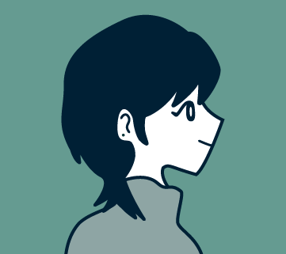

Profile

山田 新菜Niina Yamada
1999年生まれの25歳、東京都出身です。
大学卒業後、IT業界で2年半ほどヘルプデスクとして勤務しておりました。
キャリアに悩み、自分を見つめ直した結果、
以前から興味のあったWEBデザインを学ぶことを決意。
公共職業訓練校「テラハウスICA」に入校し、
デザインとコーディングを半年間学びました。
保有資格
普通自動車第一種運転免許、色彩検定2級、
1級衣料管理士、
ITパスポート、LinuC
レベル1
Strength
検索力と問題解決力
ヘルプデスク業務を通じて、限られた情報から状況を整理し、調査・解決する力を培ってきました。
この検索力と問題解決力はWeb制作の学習でも活かされており、エラーや不明点にも自分で調べて対応しています。
わからないことを放置せず、自ら乗り越える姿勢には自信があります。
柔軟なコミュニケーション力
ヘルプデスクでは、PC操作に不慣れなお客様にも専門用語を避けてわかりやすく説明するなど、
相手の理解度に合わせた対応を心がけてきました。
カフェのアルバイトでも、お客様の様子に合わせて接客のトーンやスピードを調整してきました。
状況を読み取り、相手にとって心地よい対応を考えて行動する力があります。
地道に学び続ける努力家
異業種からWebデザインの道に進むと決めてから、職業訓練で課題に取り組み、授業以外の時間も自習を重ねてスキルを磨いてきました。
苦手な分野も一つひとつ理解できるまで粘り強く向き合い、着実に成果を出す努力を続けています。
成長のための努力は惜しみません。
使用ソフト・言語
Photoshop
★★★★☆
バナーやWebサイトのデザイン制作ができます。
画像の加工や色調補正にも対応可能です。
Illustrator
★★★☆☆
主に文字の装飾やデザインのあしらい作成に
使用しています。
Figma
★★★☆☆
Webサイトのデザイン制作ができます。
基本的な操作ができます。
HTML/CSS
★★★☆☆
Visual Studio CodeとDreamweaverを使用し、
基本的なコーディングができます。
jQuery
★★★☆☆
スライダーなどの基本的な動的コンテンツを
実装できます。
Biography
| 1999.11 |
東京都に生まれる。 お絵かきや工作をして遊んでおり、 ものづくりの楽しさを感じていた。 |
|---|---|
| 2018.4 |
高校卒業後、ファッション製作に興味があり、 大妻女子大学 被服学科へ進学。 洋服制作を通じて手先の不器用さに気付く。 授業でIllustratorやPhotoshopに触れ、 手先が不器用な自分でも、パソコンを使用すれば楽しくデザイン制作ができることを知る。 |
| 2022.3 | 大妻女子大学 卒業。 興味のあったデザイン系の職は芸大・専門卒が条件なことが多く、 他に手に職がつけられる仕事をと思い、IT業界のヘルプデスクに就職。 |
| 2024.11 | ヘルプデスクとして働くも、「自分の手で形にしたもので人の役に立ちたい」という想いが強くなり、 以前より興味のあったWEBデザインを学ぶため、公共職業訓練校「テラハウスICA」に入校。 |